EXPERIMENTAL SEMABENCH · AMIGA 500 · COMING IN SEMATOR 1.1.603
The Amiga.
Our own way.
SemaBench is a new, experimental third system inside SemaTor: an Amiga 500 written from scratch,
with its own Workbench-style desktop. No Kickstart ROM to find, no other emulator inside.
Windows & Linux · Bring your own ADF and IPF disks · Desktop only (not in the phone build yet)
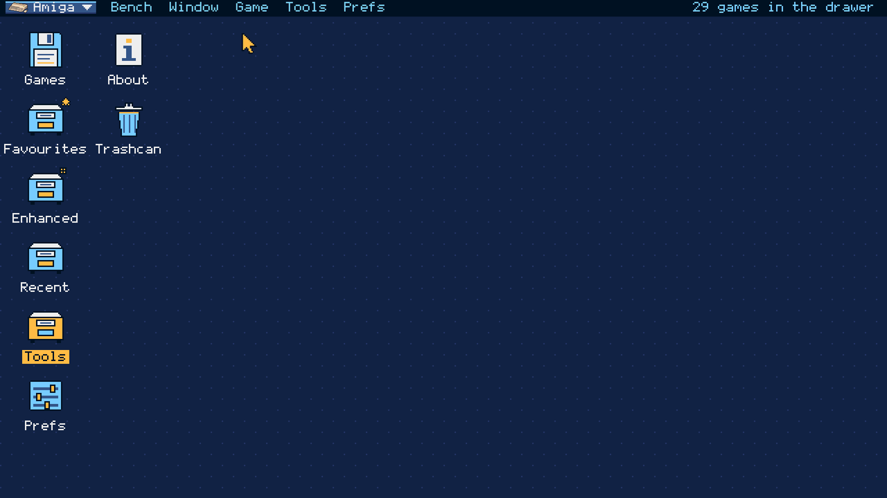
ONE APP / THREE SYSTEMS
Pick Amiga.
That's it.
SemaBench lives in the same SemaTor app as the Atari ST and SemaDrive. Open the system menu at the top left of the desktop and choose Amiga. Point the Games drawer at the folder that holds your Amiga disks, and they appear.
The system menu.
Atari ST, Mega Drive or Amiga: one click switches desktops. Each keeps its own library, look and settings.
Your disks.
ADF and IPF disks, loose or in zips. A zip is one game; multi-disk sets ("Disk 1 of 3") are grouped for you.
Start.
Open a game's page and press Start. F11 and F12 bring up the same session and options menus you know from SemaTor.
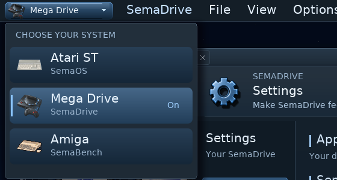
A WORKBENCH OF ITS OWN
Familiar.
And new.
A screen bar with pull-down menus (right mouse button or F10), drawers and icons on the backdrop, windows with close, depth and size gadgets. It has the feel of a 1.3-to-3.x desktop, but the drawing, layout and words are ours: no Workbench art or code is used.

Theme preview · planned for 1.1.604. The night look and three extra looks shown below are development previews. Version 1.1.603 includes the built-in SemaBench look; these extra theme files are not included.
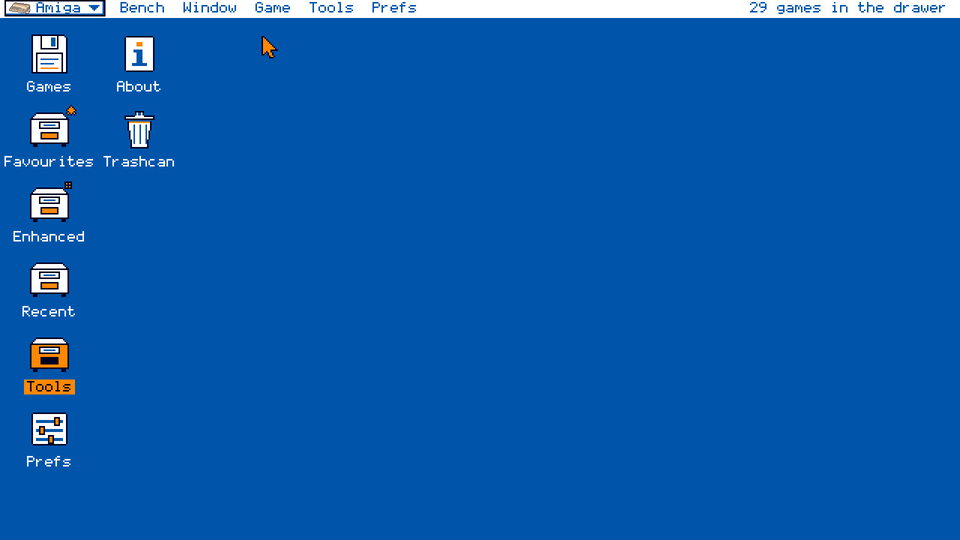
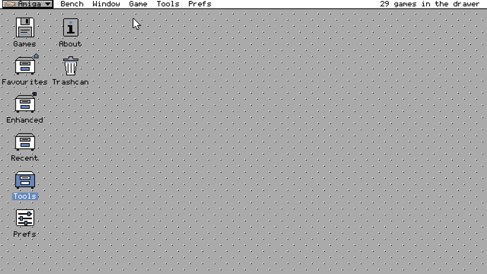
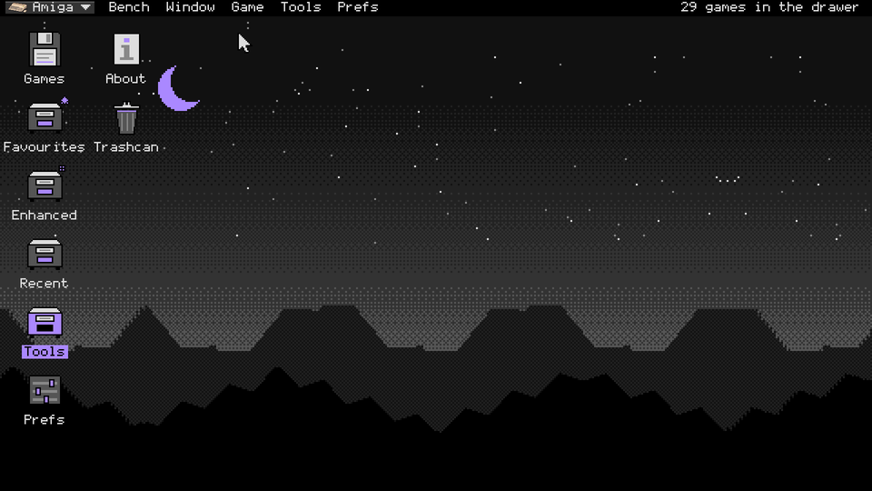
Drawers that help.
Star a game into Favourites, find it again in Recent, and put games you don't want to see in the Trashcan (the file is never deleted).
The shared apps.
Music, Saved games, Pictures, Notes and Help, in SemaBench's own look.
Your way.
Choose the icon size, icons or a list, and where your games live. Extra desktop themes are planned for 1.1.604. Window places are remembered.
LIVE BACKDROPS / DEMO-SCENE STYLE
A desktop that
moves.
Choose a moving backdrop in Prefs and the desktop behind your drawers comes alive: copper bars, turning balls, plasma. They are drawn in the old way, in whole lines of one colour and hard-edged pixels, and with "Backdrop follows music" on they pulse and swell with whatever the Jukebox is playing.
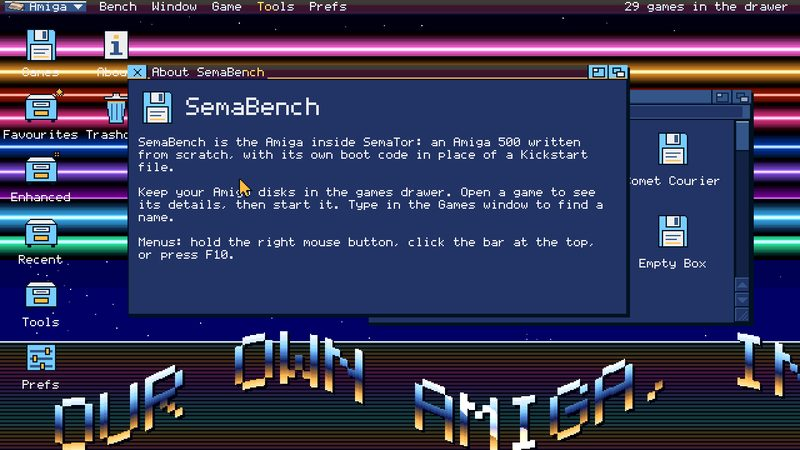
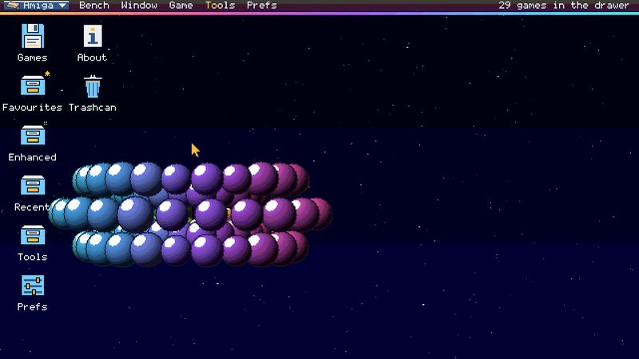
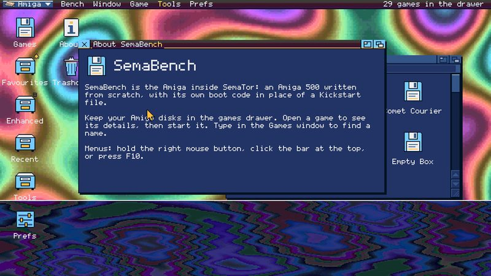
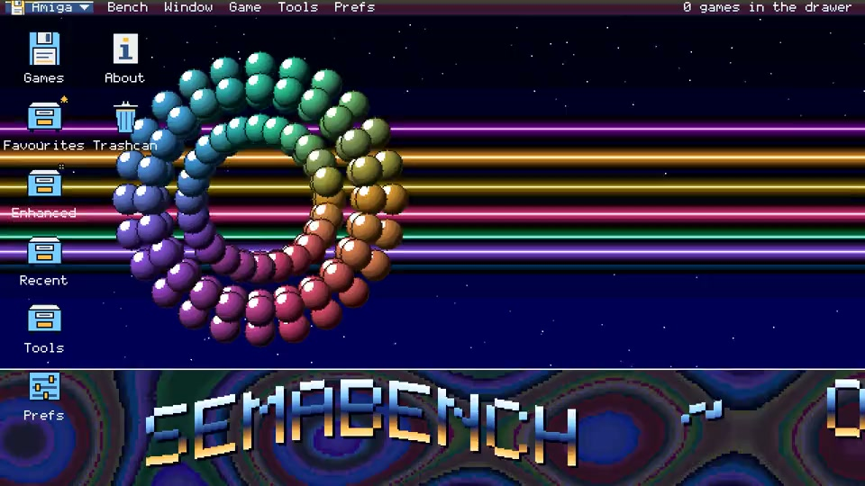
Pictures above are the real SemaBench desktop, drawn by the program itself (use Play backdrop previews to see each short loop). Your own looks and backdrops are chosen in Prefs.
YOUR COLLECTION
Every disk.
One page each.
Type to find a game. Each game page shows its region, languages, disks and which drive each goes in, and what is on the first disk. Get cover fetches box art for one game, or for the whole drawer.

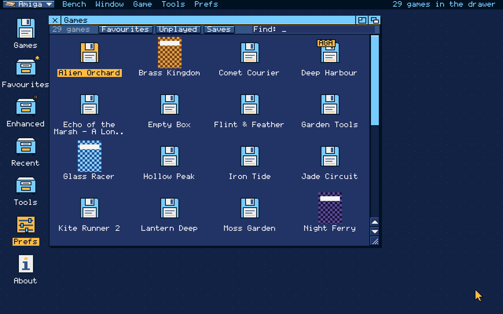

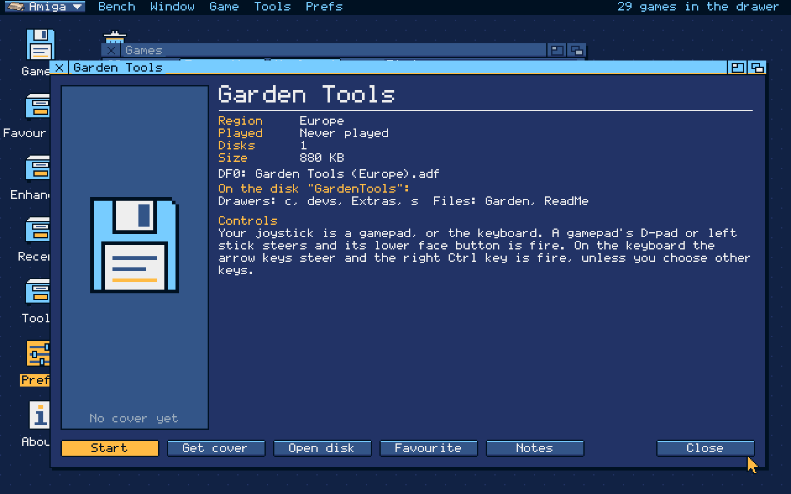
THE JUKEBOX / AMIGA TAB
Paula,
on repeat.
The Jukebox has an Amiga tab beside Atari ST and Mega Drive. It plays module files and the music found on your game disks through SemaBench's own Paula sound chip, four voices, with favourites, recent tunes, search and autoplay.

WHAT'S INSIDE
Built from
the manual up.
SemaBench is our own Amiga 500 (OCS, PAL, 68000, 512 KB chip RAM plus 512 KB) written from the Amiga Hardware Reference Manual. It shares SemaTor's 68000 and adds its own copper, bitplanes, sprites, blitter, CIAs, disk DMA and Paula.
Starts by itself.
Games that boot straight from the disk start through our own small boot ROM. Disks that run from AmigaDOS get our own stand-in: it reads the startup-sequence and runs the programs. No Kickstart file is needed.
Bit by bit.
Each track becomes the bits a real drive would read, timed as the IPF records them, so games with their own disk loaders work as on the machine.
The SemaTor way.
Save slots, rewind, screenshots, input recordings, gamepad and keyboard joystick, and backups of the Amiga side's files.
HONEST STATUS
Not yet.
But coming.
SemaBench is experimental in 1.1.603. Here is what to expect.
- Not every game runs. Some stop at a black screen or crash; AGA titles and games requiring more than 512 KB of chip memory are not supported by this configuration. Datastorm currently keeps rebooting.
- No enhancements for Amiga games yet: no widescreen, Smooth Motion or cheats pages.
- Sound and timing are not yet checked against a real Amiga; some games may run a little fast or slow.
- Disk writes are kept only in saved states; the disk files themselves are never changed.
- Music catalogue: some tracks may not import on this experimental core.
- Saved states belong to this version and may not load in the next one.
- Desktop only: SemaBench is not in the phone build yet.
Found a game that does something odd? Tell us on GitHub or on Discord. Screenshots on this page come from the 1.1.603 SemaBench desktop with made-up example game names.